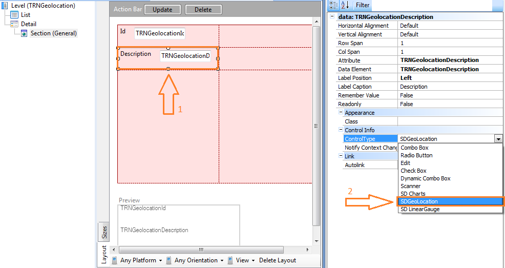

HowTo: Using SD Geolocation Control in Smart Devices
In this tutorial we will explain the meaning of SD Geolocation and how to use it. SD Geolocation is a control applicable to a geolocation field. This control will show the geolocation field over a map, indicating the position with a pin. This control can be applied to an attribute from a Transaction object based on Geolocation domain and also to a variable with same domain. ExampleFor the following tutorial we will create a Transaction (called "TRNGeolocation") with two Attributes (Id and description) as shown on the image. Then we apply the Work With for Smart Devices object pattern to the Transaction (for further information see Applying Work With for Smart Devices Pattern). Let's change the Control Type property of the attribute "TRNGeolocationDescription" to SD Geolocation.  To finish the tutorial create the following dashboard and add the WorkWithDevicesTRNGeolocation as an item. Done! Now we can deploy our application on different devices (don't forget to set your dashboard as main object). Android iOS In this case, we already have an item on the list. ScopePlatforms: Android, iOS See also
|


| Backlinks | |||
| Control Type property | Category:Control Types | ||
| HowTo: Configure Google Places API in Smart Devices | Map Zoom property | Max Zoom property | Min Zoom property |
| Toc:Native Mobile Applications Development |